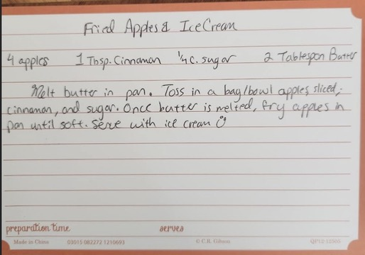

Fried Apples
If you want to experience an old school, delicious dessert after a hearty MidWestern meal, then you have found the right recipe!
Ingredients
- 4 sliced Apples (chef's choice in type!)
- 1 TBSP. Cinnamon
- 1/4 Cup of Sugar
- 2 TBSP. Butter
Ice Cream (chef's choice in type!)
Steps
- Toss apples in a bag/bowl with the cinnamon and sugar and mix together.
- Melt butter in pan.
- Once butter is melted, fry apple slices in the pan until soft.
Serve with ice cream!